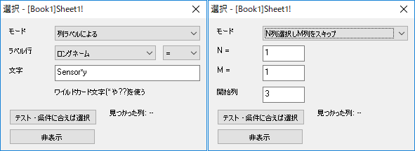

FAQ-783 ワークシート列をラベルやインデックスで選択または非表示にできますか？
Select_Column_by_Label_or_Index
最終更新日：2022/10/20
列ラベルまたは列インデックスによって、アクティブなワークシートの列を選択 (および非表示) できます。
- 編集：選択または列：列を選択をクリックしてダイアログを開き、以下を指定します。
- 選択モード
- ラベルで選択する場合は選択文字列と条件、インデックスで選択する場合は開始列から選択してスキップする列
- 
- 選択ボタンをクリックして、条件を満たす列を選択します。
- 必要に応じて、選択した列を非表示にすることもできます。列を非表示にしない場合、編集: 元に戻すか、ワークシートを選択して右クリックし、列を隠す/隠さない：隠さないを選択します。
キーワード:ラベル行, ワークシート, データ選択, スキップ, 非表示, 再表示